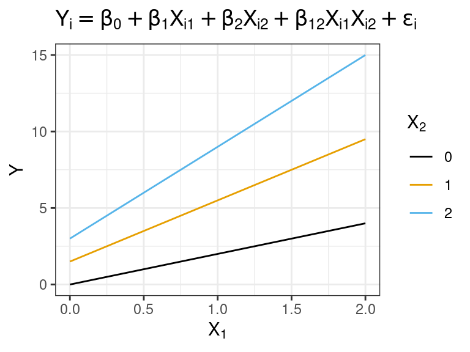
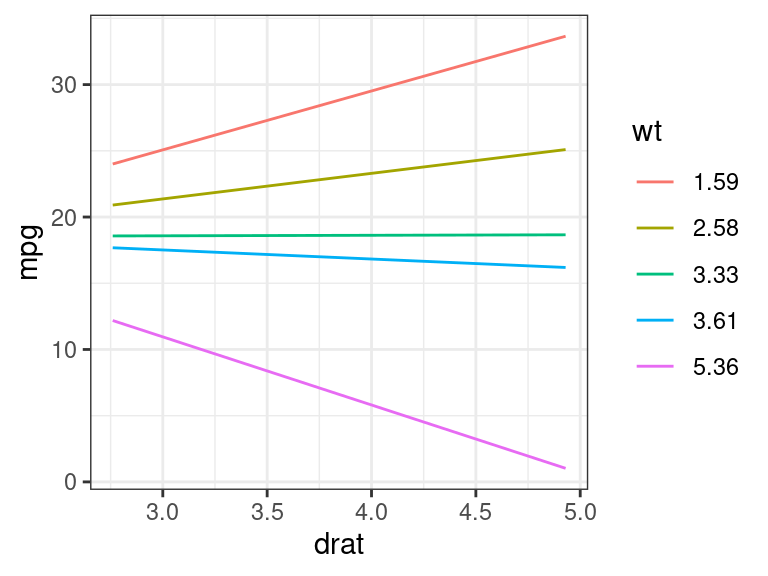

MLR III: Special Predictors
David Gerard
2022-11-09
Learning Objectives
- Incorporating/interpreting quadratic terms.
- Incorporating/interpreting categorical variables (through indicators).
- Incorporating/interpreting interaction effects.
- Chapter 8 of KNNL.
Quadratic Terms
Consider the Muscle Mass data which explores the association between age and muscle mass. You can read about it here.
library(tidyverse) library(broom) muscle <- read_csv("https://dcgerard.github.io/stat_415_615/data/muscle.csv") glimpse(muscle)## Rows: 60 ## Columns: 2 ## $ mass <dbl> 106, 106, 97, 113, 96, 119, 92, 112, 92, 102, 107, 107, 102, 115,… ## $ age <dbl> 43, 41, 47, 46, 45, 41, 47, 41, 48, 48, 42, 47, 43, 44, 42, 55, 5…These data look like a quadratic fit could help
qplot(x = age, y = mass, data = muscle) + geom_smooth(se = FALSE)lm_musc <- lm(mass ~ age, data = muscle) a_musc <- augment(lm_musc) qplot(x = .fitted, y = .resid, data = a_musc) + geom_hline(yintercept = 0, lty = 2, col = 2)
A quadratic regression model with one predictor variable is \[ Y_i = \beta_0 + \beta_1 X_i + \beta_{2}X_{i}^2 + \epsilon_i \] with the usual assumptions on the errors.
We fit this in R by first creating a new variable, say
age2, with containsagesquared.muscle <- mutate(muscle, age2 = age^2) glimpse(muscle)## Rows: 60 ## Columns: 3 ## $ mass <dbl> 106, 106, 97, 113, 96, 119, 92, 112, 92, 102, 107, 107, 102, 115,… ## $ age <dbl> 43, 41, 47, 46, 45, 41, 47, 41, 48, 48, 42, 47, 43, 44, 42, 55, 5… ## $ age2 <dbl> 1849, 1681, 2209, 2116, 2025, 1681, 2209, 1681, 2304, 2304, 1764,…We then fit a multiple linear regression model using
ageandage2as predictors.lm_musc2 <- lm(mass ~ age + age2, data = muscle) tidy(lm_musc2)## # A tibble: 3 × 5 ## term estimate std.error statistic p.value ## <chr> <dbl> <dbl> <dbl> <dbl> ## 1 (Intercept) 207. 29.2 7.09 0.00000000221 ## 2 age -2.96 1.00 -2.96 0.00453 ## 3 age2 0.0148 0.00836 1.78 0.0811The estimated regression surface is \[ \hat{Y} = 207.360 - 2.964X + 0.015X^2 \]
The \(p\)-value corresponding to
age2is a test for the quadratic term (linear regression as the null versus quadratic regression as the alternative). The \(p\)-value in this case (0.08) says that we only have weak evidence of a quadratic relationship.Exercise: Write out the null and alternative models associated with the \(p\)-value of 0.08109.
Exercise: What are the null and alternative models associated with the \(p\)-value of 0.004535?
It’s possible to fit higher order polynomials. E.g. a cubic polynomial \[ Y_i = \beta_0 + \beta_1 X_i + \beta_{2}X_{i}^2 + \beta_3 X_{i}^3 + \epsilon_i \] We would do this via
muscle <- mutate(muscle, age3 = age^3) lm_m3 <- lm(mass ~ age + age2 + age3, data = muscle) tidy(lm_m3)## # A tibble: 4 × 5 ## term estimate std.error statistic p.value ## <chr> <dbl> <dbl> <dbl> <dbl> ## 1 (Intercept) 140. 188. 0.748 0.458 ## 2 age 0.565 9.82 0.0575 0.954 ## 3 age2 -0.0456 0.168 -0.272 0.786 ## 4 age3 0.000337 0.000933 0.361 0.719However, it is rarely a good idea to fit terms higher than quadratic. This is because
- They tend to be sensative to overfitting and
- They are hard to interpret.
So at that point, you should just fit a cubic spline to these data, since it will be equally uninterpretable.
If you include a quadratic term you should always include the linear term as well.
That is, you should never fit the model \[ Y_i = \beta_0 + \beta_{2} X_i^2 + \epsilon_i \] even if the \(p\)-value is very high for the \(\beta_1\) coefficient..
Why? This follows the same logic as always including the intercept term in the model. Lower order terms are thought to provide more basic information on the relationship, so you should include them.
More generally, if you do end up using a cubic term, you should always include both linear and quadratic terms in the model, etc…
When there are multiple predictors in the model, it is usual to denote quadratic coefficients with repeat indices. E.g. \[ Y_i = \beta_0 + \beta_1X_{i1} + \beta_{11}X_{i1}^2 + \beta_{2}X_{i2} + \beta_{22}X_{i2}^2 + \beta_{12}X_{i1}X_{i2} + \epsilon_i \]
Exercise: Write out a model that contains two predictors, \(X_{i1}\) and \(X_{i2}\), where only \(X_{i2}\) is quadratic (and so the model is linear in \(X_{i1}\)). Use the repeated indexing that we just introduced.
I()
It is easier, but less conceptually clear, to apply transformations directly in the
lm()call.For polynomial transformations, you need to use
I()to inhibit R from interpreting^as a formula operator.lm_mass <- lm(mass ~ age + I(age^2), data = muscle) tidy(lm_mass)## # A tibble: 3 × 5 ## term estimate std.error statistic p.value ## <chr> <dbl> <dbl> <dbl> <dbl> ## 1 (Intercept) 207. 29.2 7.09 0.00000000221 ## 2 age -2.96 1.00 -2.96 0.00453 ## 3 I(age^2) 0.0148 0.00836 1.78 0.0811For predictions, you just need to specify
age(not alsoage2)newdf <- data.frame(age = 65) predict(object = lm_mass, newdata = newdf)## 1 ## 77.37You can use
I()insidegeom_smooth()to show quadratic terms directly on the plotqplot(x = age, y = mass, data = muscle) + geom_smooth(method = lm, formula = y ~ x + I(x^2), se = FALSE)
Practical considerations for using quadratic terms
From the Statistical Sleuth: - Quadratic terms should not routinely be included.
- Use in four situations:
- When the analyst has good reason to suspect that the response is nonlinear in some explanatory variable (through knowledge of the process or by graphical examination).
- When the question of interest calls for finding the values that maximize or minimize the mean response.
- When careful modeling of the regression is called for by the questions of interest (and presumably this is only the case if there are just a few explanatory variables).
- When inclusion is used to produce a rich model for assessing the fit of an inferential model.
Splines
Splines are piece-wise cubic functions.
Many curves are well-approximated locally by cubic functions, even if they are not well approximated globally by cubic functions.
Think about them as kind of non-parametric curves. But because they are piecewise cubic, we can use them as components in
lm().You can include a non-parametric curve as a covariate in R via splines.
Fit a spline in R using the
bs()function.library(splines) lm_mspline <- lm(mass ~ bs(age, df = 5), data = muscle)The
dfargument tells you how much degrees of freedom you want to give up to fit the spline. Higher means more flexible, but also possibly more unstable (if you have too small a sample size).Let’s make predictions and plot the predictions:
newdf <- data.frame(age = seq(min(muscle$age), max(muscle$age), length.out = 100)) newdf$mass <- predict(object = lm_mspline, newdata = newdf) ggplot() + geom_line(data = newdf, mapping = aes(x = age, y = mass)) + geom_point(data = muscle, mapping = aes(x = age, y = mass))Do not interpret the coefficient estimates and \(p\)-values here
tidy(lm_mspline)## # A tibble: 6 × 5 ## term estimate std.error statistic p.value ## <chr> <dbl> <dbl> <dbl> <dbl> ## 1 (Intercept) 110. 3.84 28.7 2.44e-34 ## 2 bs(age, df = 5)1 -8.49 8.70 -0.976 3.33e- 1 ## 3 bs(age, df = 5)2 -12.0 6.94 -1.72 9.05e- 2 ## 4 bs(age, df = 5)3 -44.3 8.22 -5.39 1.60e- 6 ## 5 bs(age, df = 5)4 -31.2 7.24 -4.30 7.17e- 5 ## 6 bs(age, df = 5)5 -45.6 5.09 -8.95 2.98e-12But you can interpret the overall \(F\)-test as testing for whether a non-parameteric association exists.
glance(lm_mspline) %>% select(p.value)## # A tibble: 1 × 1 ## p.value ## <dbl> ## 1 2.38e-16Splines aren’t good for interpretation, but they are good for flexibly controlling for a variable that you can’t seem to get to behave via other transformations.
Categorical Variables
Two classes
An innovation in the insurance industry was introduced, and a researcher wanted to study what factors affect how quickly different insurance firms adopted this new innovation. Variables include
months: How long, in months, it took the firm to adopt the new innovation.size: The amount of total assets of the insurance firm, in millions of dollars.type: The type of firm. Either a mutual company ("mutual") or a stock company ("stock").
You can load these data into R via:
firm <- read_csv("https://dcgerard.github.io/stat_415_615/data/firm.csv") glimpse(firm)## Rows: 20 ## Columns: 3 ## $ months <dbl> 17, 26, 21, 30, 22, 0, 12, 19, 4, 16, 28, 15, 11, 38, 31, 21, 2… ## $ size <dbl> 151, 92, 175, 31, 104, 277, 210, 120, 290, 238, 164, 272, 295, … ## $ type <chr> "mutual", "mutual", "mutual", "mutual", "mutual", "mutual", "mu…Recall that we deal with categorical variables by creating indicators \[ X_{i2} = \begin{cases} 1 & \text{ if stock company}\\ 0 & \text{ otherwise} \end{cases} \]
If a categorical variable has \(c\) classes, then we need to use \(c-1\) indicator variables to represent this categorical variable.
Here, \(c = 2\) (for
"stock"and"mutual"), so we only need \(c-1=1\) indicator variable.Let \(Y_i\) be the number of months elapsed for company \(i\), and \(X_{i1}\) be the size of the firm in millions of dollars. Then we will fit the following model.
\[ Y_i = \beta_0 + \beta_1X_{i1} + \beta_2X_{i2} + \epsilon_i \]
The interpretation of \(\beta_1\) is as usual. Firms that are the same type, but are 10 million dollars larger, take on average \(10 \times \beta_1\) months less to innovate.
To interpret \(\beta_2\), consider that the model for mutual companies is \[ Y_i = \beta_0 + \beta_1X_{i1} + \epsilon_i \] while the model for stock companies is \[ Y_i = \beta_0 + \beta_2 + \beta_1X_{i1} + \epsilon_i \] where \(\beta_0\) and \(\beta_1\) are the same in both instances.
This means that \(\beta_2\) is the expected difference in months between mutual and stock companies that are about the same size.
Let’s visualize this model
In R, you fit this model by first converting the categorical variable into a factor with
parse_factor()from the{readr}package. You specify the order of the levels by thelevelsargument, where the first level is the reference level (the one that does not have an indicator for it).firm <- mutate(firm, type = parse_factor(type, levels = c("mutual", "stock")))Then you can use the new factor variable in
lm(). It will automatically create \(c-1\) indicator variables to fit.lm_firm <- lm(months ~ size + type, data = firm) tidy(lm_firm, conf.int = TRUE)## # A tibble: 3 × 7 ## term estimate std.error statistic p.value conf.low conf.high ## <chr> <dbl> <dbl> <dbl> <dbl> <dbl> <dbl> ## 1 (Intercept) 33.9 1.81 18.7 9.15e-13 30.0 37.7 ## 2 size -0.102 0.00889 -11.4 2.07e- 9 -0.121 -0.0830 ## 3 typestock 8.06 1.46 5.52 3.74e- 5 4.98 11.1We conclude that stock companies take on average 8 months longer than mutual companies to adopt the new innovation (95% CI of 5 to 11 months longer), adjusting for company size. Companies of the same type that had $10 million more assets take 1 fewer month on average to adopt the new innovation (95% CI of 0.8 to 1.2 fewer months).
If you wanted to change which level is the reference level of a factor variable, you could use
fct_relevel()from the{forcats}package (a part of the tidyverse).firm <- mutate(firm, type = fct_relevel(type, "stock", "mutual")) lm_firm <- lm(months ~ size + type, data = firm) tidy(lm_firm, conf.int = TRUE)## # A tibble: 3 × 7 ## term estimate std.error statistic p.value conf.low conf.high ## <chr> <dbl> <dbl> <dbl> <dbl> <dbl> <dbl> ## 1 (Intercept) 41.9 2.01 20.9 1.50e-13 37.7 46.2 ## 2 size -0.102 0.00889 -11.4 2.07e- 9 -0.121 -0.0830 ## 3 typemutual -8.06 1.46 -5.52 3.74e- 5 -11.1 -4.98Why not fit two separate regressions (one for each firm)?
- Enforces interpretability of \(\beta_2\) parameter since otherwise \(\beta_1\) would differ between firms.
- Use all of the data to estimate \(\beta_1\).
- Use all of the data to estimate \(\sigma^2\).
More than two classes
If a categorical variable has \(c\) classes, then you use \(c-1\) indicator variables to represent this variable.
The
mpgdataset’sdrvvariable has classes"f","4", and"r".data("mpg") unique(mpg$drv)## [1] "f" "4" "r"We can represent this categorical variable with two indicator variables:
\[\begin{align} X_{i1} &= \begin{cases} 1 & \text{ if front-wheel drive}\\ 0 & \text{ otherwise} \end{cases}\\ X_{i2} &= \begin{cases} 1 & \text{ if 4-wheel drive}\\ 0 & \text{ otherwise} \end{cases} \end{align}\]
Suppose we want to explore the association between log-
ctywithdisplanddrv. Let \(Y\) be the city miles per gallon, \(X_1\) and \(X_2\) be the indicator variables for front- and 4-wheel drive cars, and let \(X_3\) be the car’s engine displacement (in liters). Then our model is \[ \log(Y_i) = \beta_0 + \beta_1X_{i1} + \beta_2X_{i2} + \beta_3X_{i3} + \epsilon_i \]The model for rear-wheel drive cars is \[ \log(Y_i) = \beta_0 + \beta_3X_{i3} + \epsilon_i \] The model for front-wheel drive cars is \[ \log(Y_i) = \beta_0 + \beta_1 + \beta_3X_{i3} + \epsilon_i \] The model for 4-wheel drive cars is \[ \log(Y_i) = \beta_0 + \beta_2 + \beta_3X_{i3} + \epsilon_i \]
Interpretation:
\(\beta_1\) is the average difference in city log-mpg between rear-wheel and front drive cars of about the same engine size.
\(\beta_2\) is the average difference in city log-mpg between rear-wheel and 4-wheel drive cars of about the same engine size.
\(\beta_2 - \beta_1\) is the average difference in city log-mpg between 4-wheel and front wheel drive cars of about the same engine size.
\(\beta_3\) is the average difference in city log-mpg between cars that are of the same type, but have 1 liter different engine displacement.
We can visualize this model below:
Of course, we would want to interpret these on the original scale.
Front wheel cars have \(e^{\beta_1}\) times higher mpg than rear wheal cars on average, adjusting for engine size.
4-wheel cars have \(e^{\beta_2}\) times higher mpg than rear wheel cars on average, adjusting for engine size.
4-wheel cars have \(e^{\beta_2 - \beta_1}\) times higher mpg than front wheel cars, adjusting for engine size.
Cars that have 1 liter higher engine displacement have \(e^{\beta_3}\) times higher mpg on average, adjusting for car type.
We fit this model in R by first selecting the order of the levels of
drvto include rear-wheel drive cars as the reference class. We do this usingparse_factor()from the{forcats}package:mpg <- mutate(mpg, l_cty = log(cty), drv = parse_factor(drv, levels = c("r", "f", "4")))Then we run
lm().lm_mpg <- lm(l_cty ~ drv + displ, data = mpg) tidy(lm_mpg, conf.int = TRUE)## # A tibble: 4 × 7 ## term estimate std.error statistic p.value conf.low conf.high ## <chr> <dbl> <dbl> <dbl> <dbl> <dbl> <dbl> ## 1 (Intercept) 3.37 0.0534 63.2 2.55e-147 3.27 3.48 ## 2 drvf -0.0263 0.0370 -0.712 4.77e- 1 -0.0992 0.0466 ## 3 drv4 -0.158 0.0304 -5.20 4.48e- 7 -0.218 -0.0981 ## 4 displ -0.143 0.00905 -15.8 2.01e- 38 -0.160 -0.125The estimated regression surface is \[ \log(\text{city mpg}) = 3.37 - 0.026\times \text{front} - 0.158 \times \text{4-wheel} - 0.142 \times \text{displacement} \]
We obtained confidence intervals for each of these coefficients, but how do we obtain a confidence interval for \(\beta_2 - \beta_1\) (the difference in average mpg between front- and 4-wheel drive cars of the same size)? There are some third-party packages that do this. But an easy way is to just change which class is the reference
mpg <- mutate(mpg, drv = fct_relevel(drv, "f", "r", "4")) lm_mpg_2 <- lm(l_cty ~ drv + displ, data = mpg) tidy(lm_mpg_2, conf.int = TRUE)## # A tibble: 4 × 7 ## term estimate std.error statistic p.value conf.low conf.high ## <chr> <dbl> <dbl> <dbl> <dbl> <dbl> <dbl> ## 1 (Intercept) 3.34 0.0263 127. 3.11e-215 3.29 3.40 ## 2 drvr 0.0263 0.0370 0.712 4.77e- 1 -0.0466 0.0992 ## 3 drv4 -0.132 0.0220 -6.00 7.66e- 9 -0.175 -0.0884 ## 4 displ -0.143 0.00905 -15.8 2.01e- 38 -0.160 -0.125So 4-wheel cars have (\(1-e^{-0.132} = 0.12\)) 12% worse MPG than front-wheel cars of the same engine size (95% confidence interval of (\(1-e^{-0.0884} = 0.12\)) 8% worse to (\(1-e^{-0.175} = 0.16\)) 16% worse).
Interaction Effects
An interaction between two variables means that the slope with respect to one variable changes with the value of the second variable.
We represent this is by multiplying the two variables together. \[ Y_{i} = \beta_0 + \beta_1X_{i1} + \beta_{2}X_{i2} + \beta_{12}X_{i1}X_{i2} + \epsilon_i \]
The slope with respect to \(X_1\) when \(X_2\) is fixed is \(\beta_1 + \beta_{12}X_2\)
The slope with respect to \(X_2\) when \(X_1\) is fixed is \(\beta_2 + \beta_{12}X_1\)
NOTE: \(\beta_1\) and \(\beta_2\) no longer represent the expected difference in \(Y\) given a unit difference of \(X_1\) or \(X_2\), respectively.
\(\beta_1\) is the expected difference in \(Y\) given a unit difference in \(X_1\) if \(X_2 = 0\). This interpretation only makes sense if 0 is in the range of \(X_2\).
\(\beta_2\) is the expected difference in \(Y\) given a unit difference in \(X_2\) if \(X_1 = 0\). This interpretation only makes sense if 0 is in the range of \(X_1\).
Generally, it is not useful to provide these interpretations of \(\beta_1\) and \(\beta_2\).
The association between \(X_1\) and \(Y\) depends on the level of \(X_2\). Likewise, the association between \(X_2\) and \(Y\) depends on the level of \(X_1\).
When \(\beta_{12}\) is positive, this is called an interaction of the reinforcement or synergistic type. The slope is more positive for more positive levels of \(X_1\) or \(X_2\).
When \(\beta_{12}\) is negative, this is called an interaction of the interference or antagonistic type. The slope is less positive for more positive levels of \(X_1\) or \(X_2\).
Synergistic:

Antagonistic:
If you include an interaction term, make sure that you include all lower-order terms. That is, Never fit a model like \[ Y_i = \beta_0 + \beta_{12}X_{i1}X_{i2} \]
- Why? The above model says that the effect of \(X_1\) depends on the level of \(X_2\), but there is no effect of \(X_1\). This is a logical inconsistency.
For the
mtcarsdataset, suppose we are fitting a model for mpg (\(Y\)) on the rear-axle ration (\(X_1\)) and weight (\(X_2\)). The model with interactions is: \[ Y_i = \beta_0 + \beta_1X_{i1} + \beta_2X_{i2} + \beta_{12}X_{i1}X_{i2} + \epsilon_i \]We don’t need to make transformations ahead of time. In
lm(), we just multiply the variables together. It will automatically include all lower-order terms.lm_mt <- lm(mpg ~ drat * wt, data = mtcars) tidy(lm_mt)## # A tibble: 4 × 5 ## term estimate std.error statistic p.value ## <chr> <dbl> <dbl> <dbl> <dbl> ## 1 (Intercept) 5.55 12.6 0.439 0.664 ## 2 drat 8.49 3.32 2.56 0.0162 ## 3 wt 3.88 3.80 1.02 0.315 ## 4 drat:wt -2.54 1.09 -2.33 0.0274We actually have some evidence here of needing an interaction.
We would still include
wtin the model even though it has a large \(p\)-value.You can provide an interpretation to a client when there are interactions via conditional effects plots that plot the relationship between \(Y\) and \(X_i\) at different levels of the other \(X\)’s.
## drat versus mpg at different levels of wt wt_seq <- quantile(mtcars$wt, c(0.025, 0.25, 0.5, 0.75, 0.975)) dr_seq <- seq(min(mtcars$drat), max(mtcars$drat), length.out = 100) newdf <- expand.grid(wt = wt_seq, drat = dr_seq) newdf$mpg <- predict(object = lm_mt, newdata = newdf) newdf <- mutate(newdf, wt = as_factor(round(wt, digits = 2))) qplot(x = drat, y = mpg, color = wt, data = newdf, geom = "line")
## wt versus mpg at different levels of drat wt_seq <- seq(min(mtcars$wt), max(mtcars$wt), length.out = 100) dr_seq <- quantile(mtcars$drat, c(0.025, 0.25, 0.5, 0.75, 0.975)) newdf <- expand.grid(wt = wt_seq, drat = dr_seq) newdf$mpg <- predict(object = lm_mt, newdata = newdf) newdf <- mutate(newdf, drat = as_factor(round(drat, digits = 2))) qplot(x = wt, y = mpg, color = drat, data = newdf, geom = "line")So we could tell a client something like:
- In general, higher weight tends to have lower fuel-mileage.
- The effect of rear-axle ratio depends on the weight of the car. Smaller cars have better fuel-mileage with higher rear axle ratios, but larger cars tend to have better fuel-mileage with smaller rear axle ratios”
BUT, we have to be emphasize the scope of our conclusions. E.g. there are no cars with a rear-axle ratio of 3 and a weight of 2.
qplot(x = wt, y = drat, data = mtcars)
Interactions and categorical variables.
An interaction between a categorical and quantitative variable means that each level of the categorical variable has its own line (different intercepts and slopes).
Let’s study again the association between
cty(\(Y\)) withdispl(\(X_3\)) anddrvfrom thempgdataset.data("mpg") mpg_sub <- select(mpg, drv, displ, cty) glimpse(mpg_sub)## Rows: 234 ## Columns: 3 ## $ drv <chr> "f", "f", "f", "f", "f", "f", "f", "4", "4", "4", "4", "4", "4",… ## $ displ <dbl> 1.8, 1.8, 2.0, 2.0, 2.8, 2.8, 3.1, 1.8, 1.8, 2.0, 2.0, 2.8, 2.8,… ## $ cty <int> 18, 21, 20, 21, 16, 18, 18, 18, 16, 20, 19, 15, 17, 17, 15, 15, …We fit the following model (recall that \(X_1\) is the indicator for front-wheel drive and \(X_2\) is the indicator for 4-wheel drive cars). \[ \log(Y_i) = \beta_0 + \beta_1X_{i1} + \beta_2X_{i2} + \beta_3X_{i3} + \beta_{13}X_{i1}X_{i3} + \beta_{23}X_{i2}X_{i3} + \epsilon_i \]
If you include an interaction between one indicator for a categorical and a quantitative, then you should include interactions for all of the indicators with that quantitative. R will do this automatically as long as you use factors.
To interpret this model, you should think about what the response surface is for each class in the categorical variable.
- The model for rear-wheel drive cars is \[ \log(Y_i) = \beta_0 + \beta_3X_{i3} + \epsilon_i \]
- The model for front-wheel drive cars is \[ \log(Y_i) = \beta_0 + \beta_1 + (\beta_3 + \beta_{13})X_{i3} + \epsilon_i \]
- The model for 4-wheel drive cars is \[ \log(Y_i) = \beta_0 + \beta_2 + (\beta_3 + \beta_{23})X_{i3} + \epsilon_i \]
\(\beta_{13}\) is the expected difference in the slope between rear-wheel and front-wheel drive cars.
\(\beta_{23}\) is the expected difference in the slope between rear-wheel and 4-wheel drive cars.
But it is better to just interpret interactions here by making conditional effects plots. This is the default output of
geom_smooth()when you color code by a categorical variable:qplot(x = displ, y = cty, color = drv, data = mpg) + geom_smooth(method = "lm", se = FALSE) + scale_y_log10()To fit this in R, just make sure you have the reference level as you like via
parse_factor()orfct_relevel(). Then uselm()the same way with interactions as before (using multiplication).mpg_sub <- mutate(mpg_sub, drv = parse_factor(drv, levels = c("r", "f", "4")), l_cty = log(cty)) lm_mpg_int <- lm(l_cty ~ drv * displ, data = mpg_sub) tidy(lm_mpg_int)## # A tibble: 6 × 5 ## term estimate std.error statistic p.value ## <chr> <dbl> <dbl> <dbl> <dbl> ## 1 (Intercept) 3.00 0.168 17.8 4.19e-45 ## 2 drvf 0.417 0.174 2.39 1.77e- 2 ## 3 drv4 0.210 0.174 1.21 2.29e- 1 ## 4 displ -0.0700 0.0321 -2.18 3.01e- 2 ## 5 drvf:displ -0.0990 0.0366 -2.70 7.36e- 3 ## 6 drv4:displ -0.0707 0.0339 -2.08 3.82e- 2Exercise: What is the estimated regression surface for rear-wheel drive cars? Front-wheel drive cars? 4-wheel drive cars?
We obtain the same regression surface as if we fit three different models to the three different classes.
mpg_sub_r <- filter(mpg_sub, drv == "r") tidy(lm(l_cty ~ displ, data = mpg_sub_r))## # A tibble: 2 × 5 ## term estimate std.error statistic p.value ## <chr> <dbl> <dbl> <dbl> <dbl> ## 1 (Intercept) 3.00 0.204 14.7 3.63e-13 ## 2 displ -0.0700 0.0390 -1.80 8.56e- 2The benefit of fitting a single model is then
- We can directly test for the “different lines” model using \(F\)-tests
- We use all of the data to estimate the residual variance.
The \(p\)-values for the interaction terms in the above output are not useful. This is because they only test for the association for an interaction between
displand a single indicator variable. But we want to test whether there is an interaction betweendisplanddrv.Let’s test for an interaction between
displanddrv. We do so by fitting models both with and with out interactions. We then useanova()to run an \(F\)-test.lm_mpg_no_int <- lm(l_cty ~ drv + displ, data = mpg_sub) lm_mpg_int <- lm(l_cty ~ drv * displ, data = mpg_sub) anova(lm_mpg_no_int, lm_mpg_int)## Analysis of Variance Table ## ## Model 1: l_cty ~ drv + displ ## Model 2: l_cty ~ drv * displ ## Res.Df RSS Df Sum of Sq F Pr(>F) ## 1 230 3.75 ## 2 228 3.64 2 0.118 3.7 0.026So we have moderate evidence of an interaction effect (\(p = 0.026\)).
Usage guidelines
From the Statistical Sleuth:
Interaction terms should not be routinely included in regression models.
Use in three scenarios:
- When a question of interest pertains to interaction.
- When good reason exists to suspect interactions (e.g. a priori knowledge or residual plots strongly suggest such).
- When interactions are proposed as a more general model for the purpose of examining the goodness of fit of a model without interaction.
Comparing a Saturated Second-Order Model for Lack-of-fit
If you only have a few predictors, it is often a good idea to fit a saturated second-order model and compare the fully linear model to it as a type of lack-of-fit test.
- Saturated second-order model: A model with all possible quadratic and interaction terms, along with lower-order terms.
For example, with two predictors: \[\begin{align} H_0: Y_i &= \beta_0 + \beta_1X_{i1} + \beta_2X_{i2} + \epsilon_i\\ H_A: Y_i &= \beta_0 + \beta_1X_{i1} + \beta_2X_{i2} + \beta_{11}X_{i1}^2 + \beta_{22}X_{i2}^2 + \beta_{12}X_{i1}X_{i2} + \epsilon_i \end{align}\]
Rejecting the null here indicates that we have evidence of a lack-of-fit and should include some quadratic or interaction terms.
Let’s look at a case example studying the effects of temperature (\(X_1\)) in Celsius and charge rate (\(X_2\)) in amperes on life expectancy of a batter (\(Y\)) in the number of cycles before death. Data can be read into R via
power <- tibble::tribble( ~cycles, ~charge, ~temp, 150, 0.6, 10, 86, 1, 10, 49, 1.4, 10, 288, 0.6, 20, 157, 1, 20, 131, 1, 20, 184, 1, 20, 109, 1.4, 20, 279, 0.6, 30, 235, 1, 30, 224, 1.4, 30 )We fit the model \[ Y_i = \beta_0 + \beta_1X_{i1} + \beta_2X_{i2} + \beta_{11}X_{i1}^2 + \beta_{22}X_{i2}^2 + \beta_{12}X_{i1}X_{i2} + \epsilon_i \] and run the hypothesis tests for \[ H_0: \beta_{11} = \beta_{22} = \beta_{12} = 0\\ H_A: \text{ at least one of } \beta_{11}, \beta_{22}, \beta_{12} \text{ nonzero} \]
We can run this test because the reduced model is a subset of the full model.
Let’s fit the full and reduced models
power <- mutate(power, charge2 = charge ^ 2, temp2 = temp ^ 2) lm_full <- lm(cycles ~ charge * temp + charge2 + temp2, data = power) lm_reduced <- lm(cycles ~ charge + temp, data = power)We then run
anova()to run the corresponding \(F\)-testanova(lm_reduced, lm_full)## Analysis of Variance Table ## ## Model 1: cycles ~ charge + temp ## Model 2: cycles ~ charge * temp + charge2 + temp2 ## Res.Df RSS Df Sum of Sq F Pr(>F) ## 1 8 7700 ## 2 5 5240 3 2460 0.78 0.55We do not have evidence of a lack-of-fit (\(p=0.55\))
Exercise: What is \(SSE(F)\)? \(SSE(R)\)? \(dr_F\)? \(df_R\)?
If we would have failed to reject, the best course of action for interpretation would be to come up with conditional effects plots.
## Conditional effects plot for charge charge_seq <- unique(power$charge) temp_seq <- seq(min(power$temp), max(power$temp), length.out = 200) expand.grid(charge = charge_seq, temp = temp_seq) %>% mutate(charge2 = charge^2, temp2 = temp^2) -> newdf newdf$cycles <- predict(object = lm_full, newdata = newdf) newdf <- mutate(newdf, charge = as_factor(charge)) qplot(x = temp, y = cycles, color = charge, data = newdf, geom = "line")## Conditional effects plot for temperature temp_seq <- unique(power$temp) charge_seq <- seq(min(power$charge), max(power$charge), length.out = 200) expand.grid(charge = charge_seq, temp = temp_seq) %>% mutate(charge2 = charge^2, temp2 = temp^2) -> newdf newdf$cycles <- predict(object = lm_full, newdata = newdf) newdf <- mutate(newdf, temp = as_factor(temp)) qplot(x = charge, y = cycles, color = temp, data = newdf, geom = "line")
Exercise
Researchers were studying the relationship between line speed and the amount of scrap for two production lines in a soap production company. The variables include
scrap: Amount of scrap (coded). This is the response variable.speed: Line production speed (coded).line: Production line. Either"line1"or"line2".
You can load these data into R via:
library(tidyverse) library(broom) soap <- read_csv("https://dcgerard.github.io/stat_415_615/data/soap.csv") glimpse(soap)## Rows: 27 ## Columns: 3 ## $ scrap <dbl> 218, 248, 360, 351, 470, 394, 332, 321, 410, 260, 241, 331, 275,… ## $ speed <dbl> 100, 125, 220, 205, 300, 255, 225, 175, 270, 170, 155, 190, 140,… ## $ line <chr> "line1", "line1", "line1", "line1", "line1", "line1", "line1", "…
Run an exploratory data analysis. Does one line seem to produce less scrap than the other, controlling for speed? Does the association between scrap and speed differ between the different lines?
Define appropriate variables and write out a model that includes an interaction between the production line and the speed of production.
Fit the interaction model from part 2 in R. Does the model seem appropriate?
Do the two production lines have the same slope for the relationship between scrap and speed?
Formally answer the question on whether one line produces less scrap than the other.